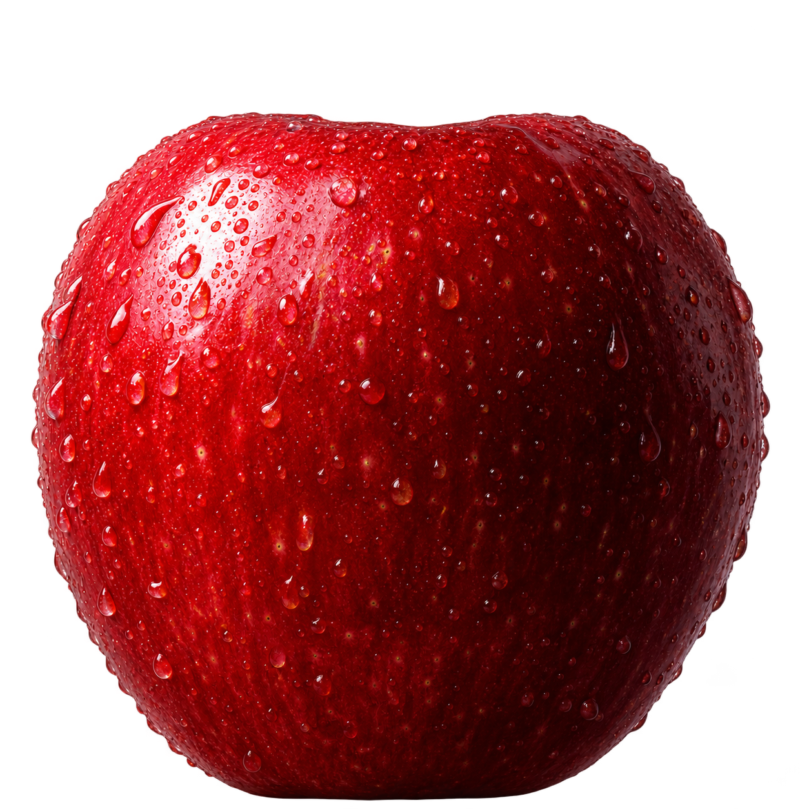
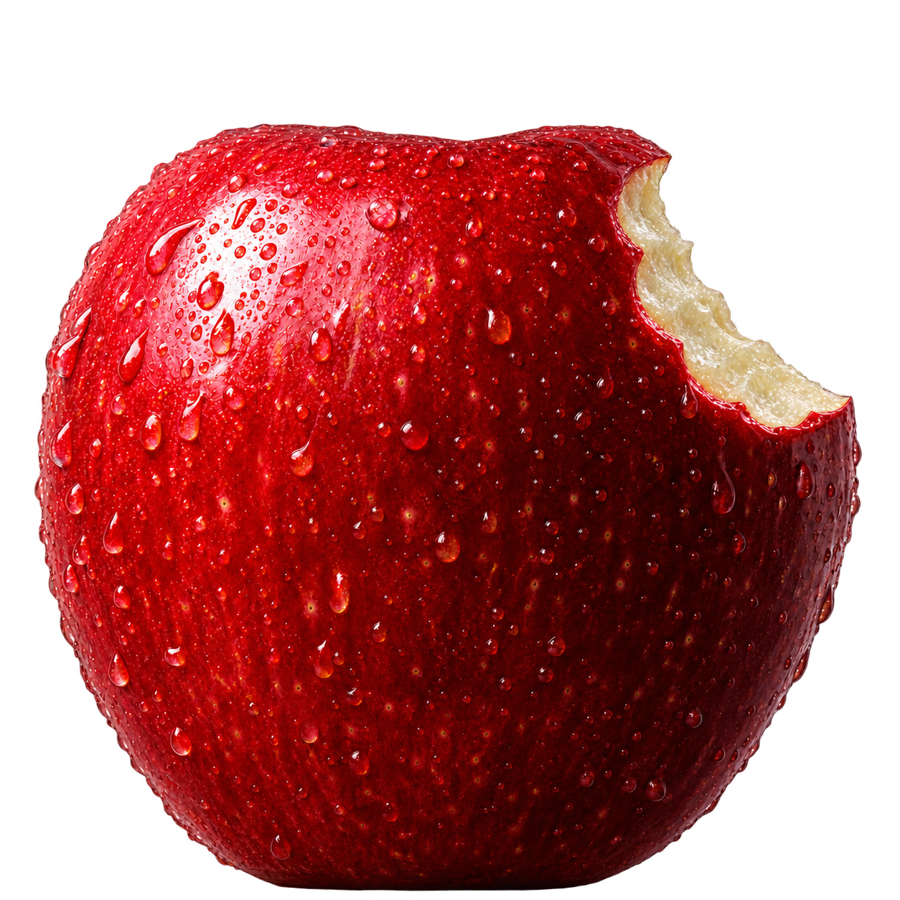
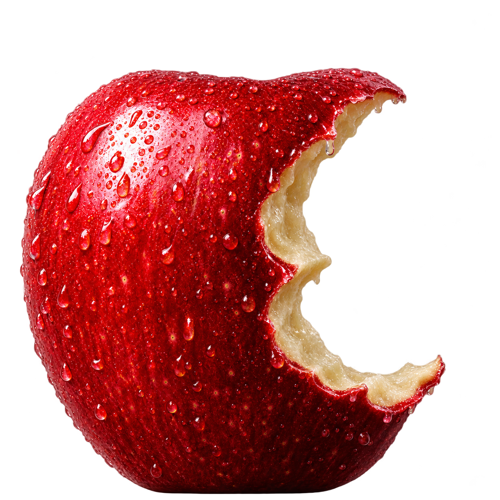
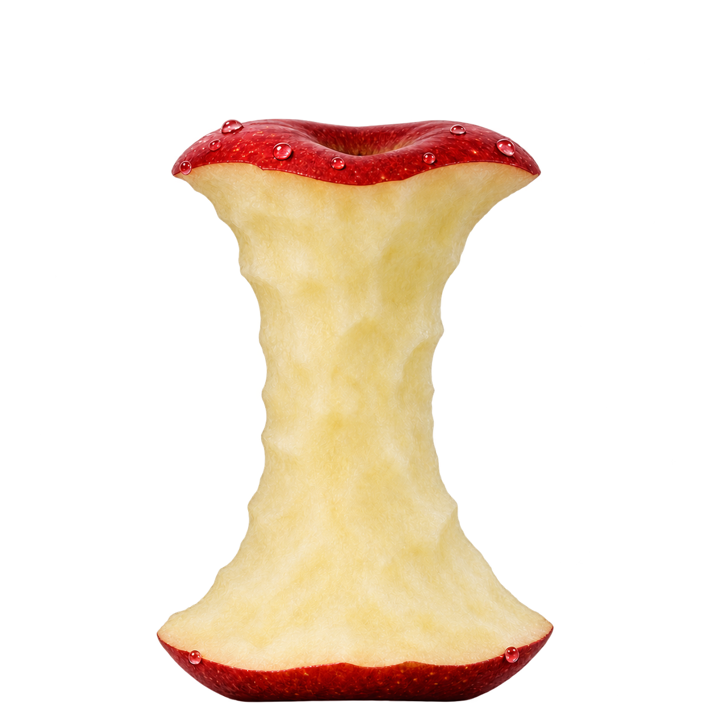

The apple is the edible fruit of Malus domestica, a deciduous tree in the rose family. Apples vary widely in color, shape, and flavor. Their skin may be red, green, or yellow, while the flesh ranges from crisp and tart to soft and sweet. A cross-section through the fruit reveals the chambers that hold its seeds.
Domesticated apples trace much of their ancestry to wild trees in Central Asia. As cultivation spread, growers selected trees for flavor, texture, and keeping quality. Named cultivars are commonly propagated by grafting, which preserves the characteristics of the parent tree. Apples are eaten fresh, baked into pies, pressed into cider, and cooked into sauces and preserves.



